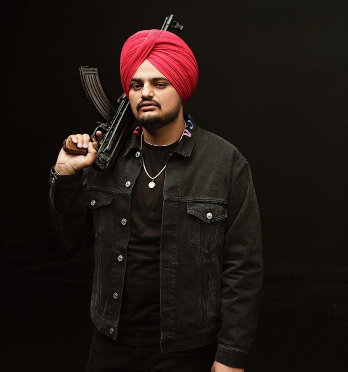

- Sidhu Moosewala, born Shubhdeep Singh Sidhu on June 11, 1993, was a prominent Indian singer, songwriter, and actor associated with Punjabi music and film industries. Known for his distinctive style and impactful lyrics, he gained a massive following both in India and abroad.
- Early Life and Background Birthplace: Mansa district, Punjab, India. Education: He studied at a local school and later attended a college in Punjab, where he began to develop an interest in music.
- Musical Career Debut: Sidhu Moosewala started his career with the song "So High," which gained significant attention. Breakthrough: His 2017 song "Just Listen" was a major hit, establishing him as a prominent figure in Punjabi music. Popular Songs: Some of his notable tracks include "So High," "Issa Jatt," "Dollar," "Bad Fellow," and "The Last Ride." His music often blended Punjabi cultural themes with contemporary beats. Collaborations: Moosewala worked with various artists and producers, which helped him gain popularity across different music platforms.
- Acting Career Film Debut: Sidhu Moosewala ventured into acting with the film "Moose Jaw," which was released in 2018. Notable Films: He appeared in several Punjabi films, including "Jodi" (2023), showcasing his versatility beyond music.
- Style and Influence Music Style: His music often features Punjabi folk influences combined with modern sounds, addressing themes like social issues, personal struggles, and cultural pride. Influence: Sidhu Moosewala was known for his bold and outspoken personality, which resonated with many fans. He was also recognized for addressing social issues through his music.
- Personal Life and Controversies Public Image: Moosewala had a polarizing public image. While many admired his musical talent, he was also involved in various controversies, including legal issues and conflicts with other artists. Tragic End: Sidhu Moosewala's life was cut short when he was tragically shot and killed on May 29, 2022. His death shocked his fans and the music community, leading to widespread mourning.
- Legacy Impact: Despite his untimely death, Sidhu Moosewala left a lasting impact on Punjabi music and culture. His music continues to be celebrated, and he is remembered as one of the most influential Punjabi artists of his time. Sidhu Moosewala's journey from a small village in Punjab to becoming a global musical icon is a testament to his talent and the power of music to transcend borders.
